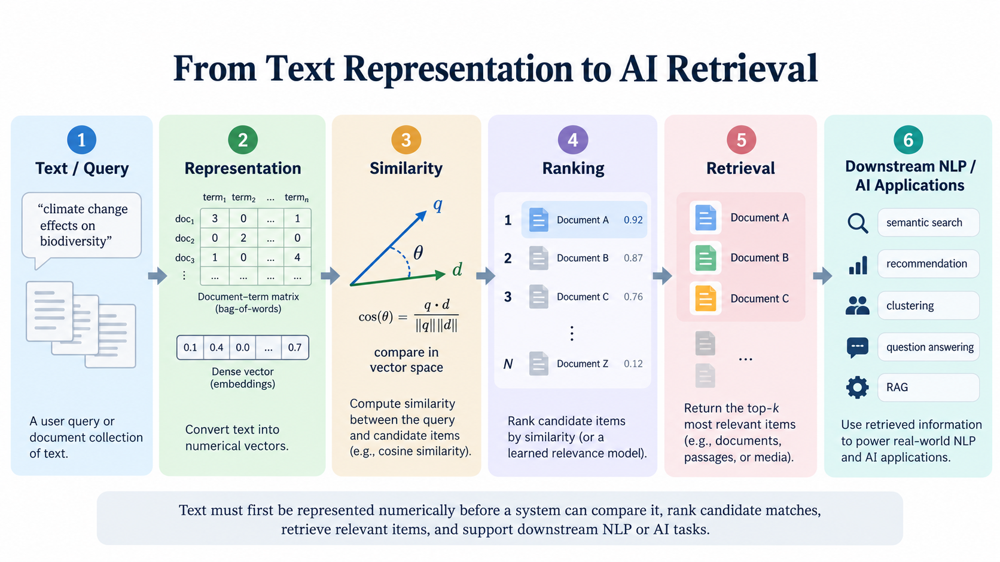
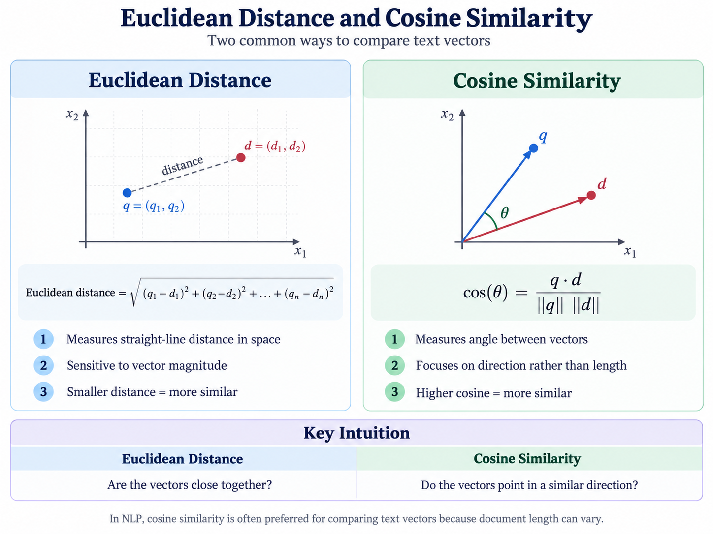
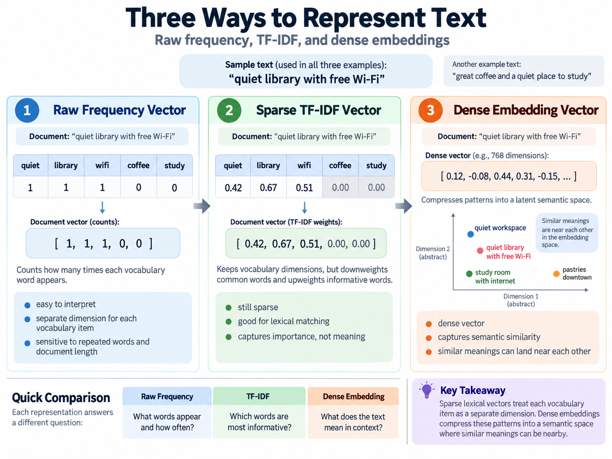

4.1 Semantic Similarity and Retrieval#
Week 03 showed how text can be represented as vectors. This week asks the next question:
Once a document, sentence, or query is represented as a vector, how do we decide which items are similar and which ones should be retrieved?
The conceptual progression is simple:

Fig. 10 From Text Representation to AI Retrieval#
This is the foundation for semantic search, recommendation, duplicate detection, clustering, and the retrieval step in many modern AI systems.
1. What does “similar” mean?#
Two pieces of text can be similar in different ways.
Lexical similarity is about shared surface form: same words, same token overlap, or similar vocabulary.
Semantic similarity is about shared meaning or intent, even when the wording differs.
Note
For example, the sentences below are not identical in wording, but they are close in meaning:
“The patient reported chest pain after exercise.”
“Physical exertion caused discomfort near the upper torso.”
A bag-of-words or TF-IDF representation may score them low on lexical overlap, but a semantic embedding model may place them nearby in vector space.
This is why text similarity depends on representation choice, not only on the text itself.
2. Lexical similarity#
A simple baseline for text similarity is lexical overlap. Jaccard similarity is a standard choice when we compare sets of tokens.
Jaccard similarity compares:
the words that appear in both texts
with the total number of unique words that appear across the two texts
Important
In set notation:
intersection = words shared by both texts union = all unique words that appear in either text
For two sets A and B:
Interpretation:
1 means the sets are identical;
0 means they share no tokens;
intermediate values mean partial overlap.
Jaccard is useful because it focuses on shared vocabulary. It tells us how much two documents overlap at the token-set level. It does not tell us whether they mean the same thing, and it is insensitive to repeated words if we compare sets rather than counts.
Note
Text A: quiet library wifi
Text B: quiet cafe wifi
Shared words: quiet, wifi → 2
All unique words: quiet, library, cafe, wifi → 4
Jaccard similarity = 2 / 4 = 0.50
This is a good lexical baseline, but it is limited. Two texts may share few words and still be semantically related, or they may share many words and still be about different topics.
Important
Lexical similarity is a strong baseline for surface overlap, but it does not capture meaning well. The representation matters.
3. Distance and similarity in vector space#
Once text has been converted into vectors, we can compare them numerically.
A distance metric tells us how far apart two vectors are. A similarity metric tells us how closely aligned they are.

Fig. 11 Distance Metrics#
Euclidean and Manhattan distance#
Euclidean distance is the straight-line distance between two vectors. Manhattan distance is the sum of absolute coordinate differences.
These are intuitive geometric measures, but they are not always the best choice for text.
Why? Because text vectors often have many dimensions and different lengths. A document with more words may naturally be farther away in raw Euclidean space even when the meaning is similar.
Cosine similarity#
Cosine similarity is the main metric for comparing text vectors. It measures the angle between two vectors rather than their absolute magnitude.
For vectors \(x\) and \(y\):
This matters because text vectors may differ in length, but the important question is often whether they point in roughly the same direction.
same direction → similarity ≈ 1
partly similar direction → similarity somewhere between 0 and 1
very different direction → similarity closer to 0
Note
For text retrieval and semantic comparison, cosine similarity is usually more informative than Euclidean distance.
4. Why cosine similarity matters#
Cosine similarity is especially useful when vectors represent text features.
Consider the difference between:
a sparse TF-IDF vector
a dense embedding vector
and a raw frequency vector

Fig. 12 Text Representation Review#
Sparse TF-IDF similarity#
TF-IDF vectors are sparse. They encode relative importance of words within a document and across a corpus. That makes them good for lexical matching and term-weighted comparison.
If two documents share the same jargon or important terms, TF-IDF cosine similarity can be high. If they talk about similar ideas without sharing many words, the score may be low.
Dense embedding similarity#
Dense embeddings represent words, sentences, or documents in a lower-dimensional space where nearby vectors often reflect semantic relatedness. This can capture paraphrases, synonyms, and related concepts that do not share the same words.
For example, two sentences may mean nearly the same thing while using very different vocabulary:
“The meeting was postponed until Friday.”
“We moved the discussion to next Friday.”
A lexical similarity measure may give them a low score; a semantic embedding model may give them a much higher score.
Note
Semantic Textual Similarity is an NLP task: estimate how similar two texts are in meaning. An embedding model creates the representations, and a similarity function such as cosine similarity compares them.
6. From Similarity to Retrieval#
So far, we have mostly compared two texts at a time.
Retrieval asks a different question:
Given one query and many candidate documents, which documents should be returned first?
This changes the task from comparison to ranking.
A retrieval system typically follows this workflow:
query
↓
represent the query
↓
compare it with many candidate documents
↓
assign similarity or relevance scores
↓
rank the candidates
↓
return the top results
For example, consider the query:
“I need a quiet place to work with Wi-Fi.”
and these candidate documents:
“Coffee shop with free Wi-Fi and plenty of tables”“Quiet public library with study rooms”“Best espresso and pastries downtown”“Coworking space with desks and internet”“How to troubleshoot a wireless router”Conceptually:
Candidate |
Similarity / Relevance Score |
Rank |
|---|---|---|
Quiet public library with study rooms |
High |
1 |
Coworking space with desks and internet |
High |
2 |
Coffee shop with free Wi-Fi and plenty of tables |
Moderate |
3 |
Best espresso and pastries downtown |
Lower |
4 |
How to troubleshoot a wireless router |
Lower |
5 |
A lexical representation such as TF-IDF may reward exact word overlap such as Wi-Fi.
A dense embedding may instead rank coworking space with desks and internet highly because it captures similar intent even though the wording differs.
Important
similarity tells us how two representations compare; retrieval uses those comparisons to rank many candidates.
Ranking and top-k retrieval#
Most retrieval systems do not return every candidate. Instead, they return the highest-ranked items, often called the top-k results.
Important
A retrieval system does not prove that the top-ranked document is correct.
It only says that, according to the chosen representation and scoring method, that document ranked highest among the available candidates.
7. Key takeaways#
Once language has been represented as vectors, similarity gives us a way to compare, rank, retrieve, and reason about texts in a computationally useful way.
Similarity in language is not one thing. It can be lexical, geometric, or semantic.
Jaccard is a useful lexical baseline, but it does not capture meaning.
Euclidean and Manhattan distance provide geometric intuition, but cosine similarity is usually the more important metric for text vectors.
Sparse TF-IDF vectors and dense embedding vectors behave differently because they represent different kinds of information.
Semantic search works by converting queries and documents to vectors, calculating similarity, and ranking matches.
Retrieval systems are powerful but imperfect. Similarity is not the same as truth or usefulness.
References#
[JM26]
[MCCD13]
[MRS09]